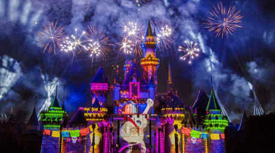

Where To Watch
Whether it's your first time or 100th time visiting Disneyland, watching one of the many shows they provide is a must on the to-do list. If you're unaware of what the shows are and what times they are at, you can ask a Cast Member for a park map, grab one on your way in at the gate entrance, or look it up in the Disneyland mobile app. Knowing the times of the shows is easy enough but knowing where to watch them is a secret in it's own. Here's a list of the top shows to watch and the best secret locations to watch them at:
Fantasmic
- The bridge above Pirates of the Caribbean. You need to get there early as other people know of this location and want to claim their spot too.
- If you have a sweet tooth, Disneyland offers a dessert package where you can eat desserts and get a reserved spot to watch the show. Check it out on their website.
- You can get reserve seating in front of Sleeping Beauty castle but that comes with a cost. If you don't care about watching the animation on the castle itself, there's a bench in Frontierland next to Stage Door Cafe where my husband and I like to watch the fireworks. You can see all of the fireworks and there are no obstructions in your way. No need to get there early to reserve a spot as most people don't sit in this area when they want to watch the fireworks.
- To avoid the crowds, going to the top of the Mickey and friends parking garage is also a great spot. When my husband and I are ready to leave the park but want to watch the fireworks, we normally go to the top of parking garage (Minnie level). This is also a quick getaway to avoid the firework crowd trying to leave Main Street and get on the trams back to the parking garage.
Parade
- The curb in front of the Emporium on Main Street. This is also an entrance way to let park goers cross the street when there is a break waiting for the parade. You can usually sneak in a spot last minute as Cast Members reserve the spot for the entrance pathway. No need to camp out on Main Street like everyone else!
Let Me Entertain You
For the full list of entertainment on the day you're going to Disneyland, check out the Disneyland app on your mobile phone or pick up a park map at the gate entrance. Here is a list of must-see shows that you might not be aware of:
- Mickey and the Magical Map
- Billy and the Hillbillies at Stage Door Cafe
- Fantasmic
- Fireworks
- Current showcase parade